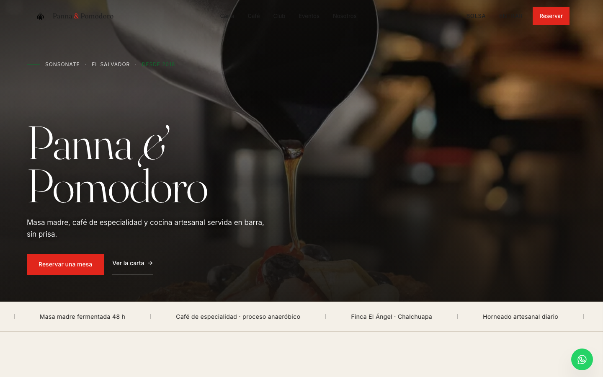
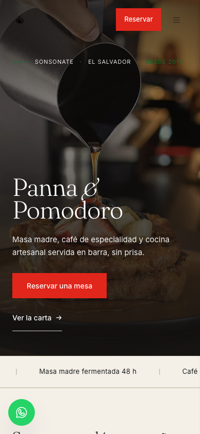
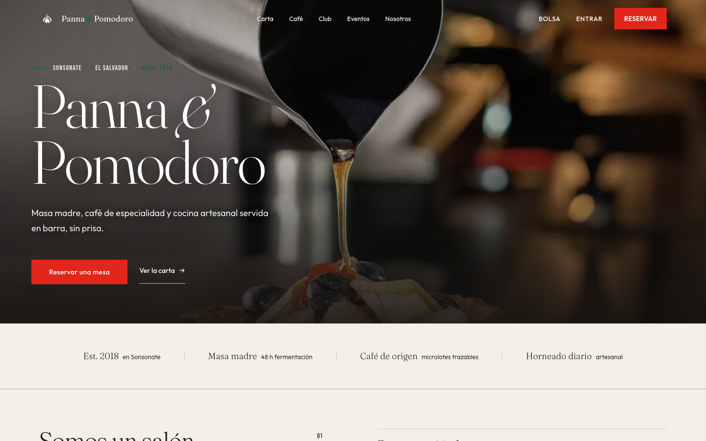
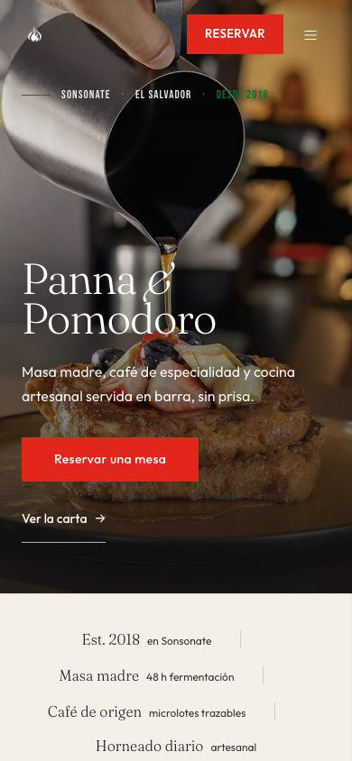
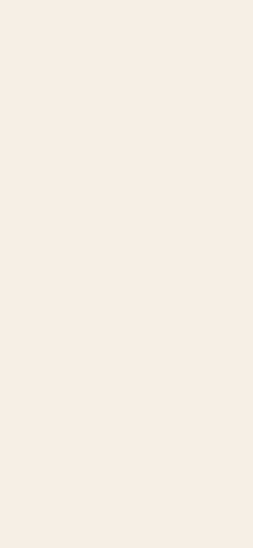
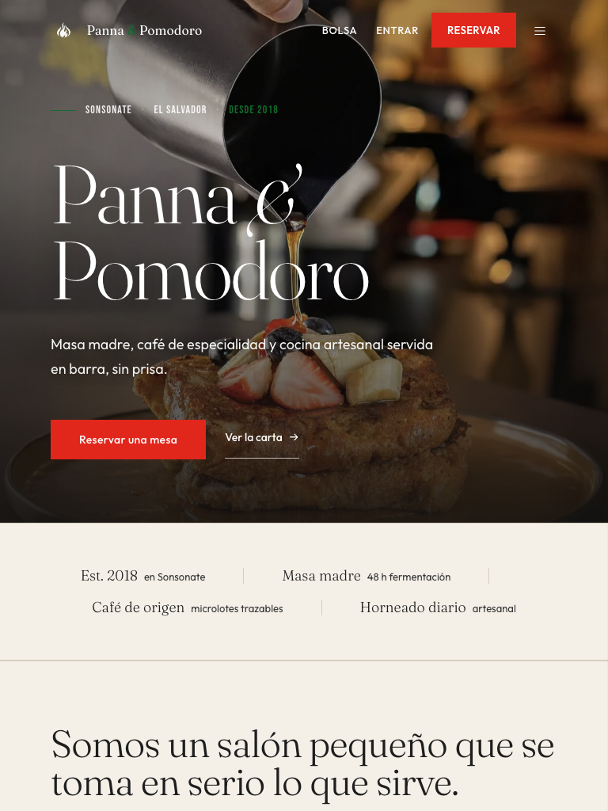
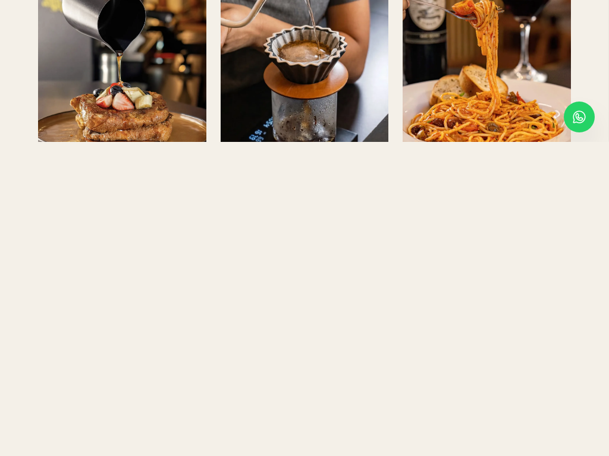
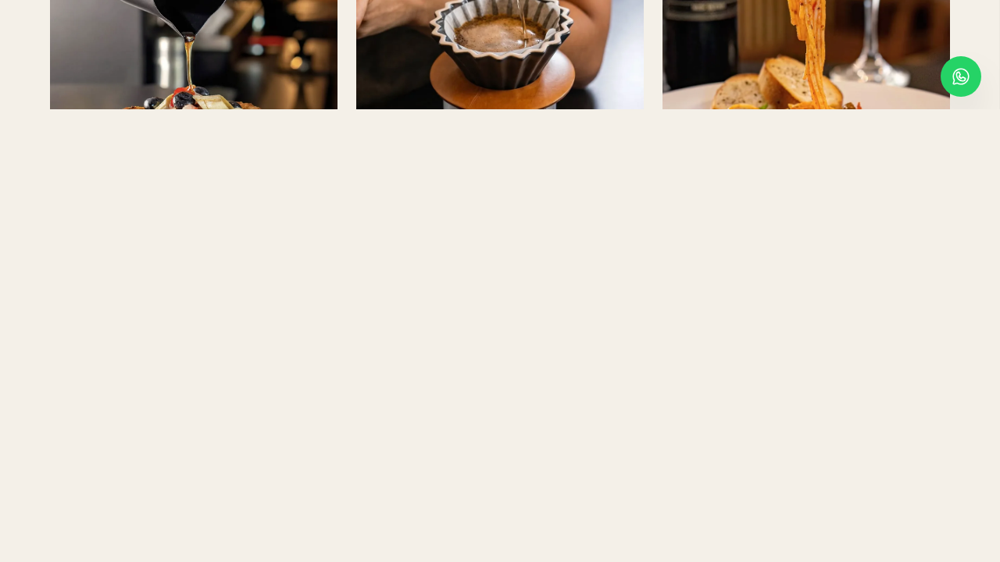
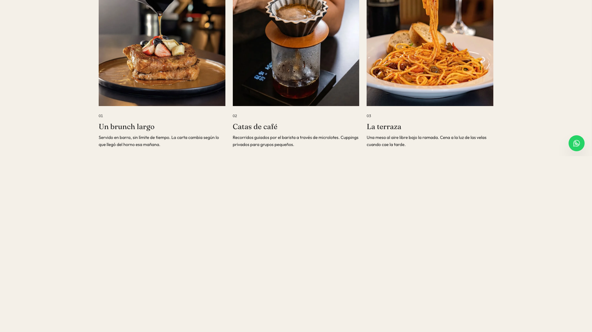

Migración tipográfica · Bebas Neue + Outfit (Nexa) + Fraunces
URL: https://frontend-p8htv0f30-oscarguevs-projects.vercel.app · Generado: 2026-07-11T03:08:34.707Z · Viewports: 320, 375, 390, 430, 768, 1024, 1280, zoom 110%, zoom 125%
KPIs de auditoría · 54 ejecuciones
9 viewports × 6 rutas = 54 ejecuciones. axe-core WCAG 2.1 AA validado en
desktop 1440, mobile 390 y tablet 768.
✓ Auditoría completamente limpia.
Sistema tipográfico aplicado
Display / Editorial
Fraunces light 300, regular 400
Hero h1, h2, h3 narrativos. Light + italic decorativo.
Cuerpo / UI
Outfit (Nexa substitution) 300–700
Body, párrafos, botones, formularios, navegación, cards.
Eyebrows / Categorías
Bebas Neue regular 400, tracking-luxury-wide
Microetiquetas, eyebrows, fechas, numeración, categorías, MAYÚSCULAS.
El manual de marca (PANTONE P 75-2 C, paleta corporativa) cita Bebas Neue, ChunkFive y Nexa.
Se aplica estrictamente Fraunces para el registro editorial (decisión aprobada por el cliente)
y se incorpora Bebas Neue con alcance limitado a microetiquetas y numeración.
Outfit sustituye a Nexa (de pago) por similitud geométrica; al obtener licencia de Nexa, basta
cambiar la primera entrada del stack en tailwind.config.js.
4
Paleta validada
Variantes digitales conservadas (decisión aprobada):
#E1261C (dark variant de #F81207), #B91E17 hover, #106D2E (dark variant de #00A82B para texto AA),
#168A3B solo decorativo. Distribución: 75-80% neutros · 15-18% ink/charcoal · 5-7% rojo · 2-4% verde.
Hero · antes (v3) vs después (v9)
Antes · Inter sans + serif italic


Después · Fraunces + Outfit + Bebas Neue


Capturas antes/después por viewport
Mobile 390 (iPhone 14)m_390
Mobile 430 (Pro Max)m_430

Tablet 768 (iPad)t_768

Tablet 1024 (landscape)t_1024

Desktop 1280d_1280

Desktop 1920d_1920

Cambios materiales
- index.html — carga de Bebas Neue, Outfit y Fraunces desde Google Fonts. Retiro de Inter.
- tailwind.config.js — fontFamily reordenado: sans=Outfit/Nexa, display=Fraunces, nueva familia eyebrow=Bebas Neue.
- src/index.css — clase .eyebrow migrada a font-eyebrow (Bebas Neue uppercase + tracking). Body base ya consume Outfit vía Tailwind.
- Hero.jsx — microetiqueta usa font-eyebrow; CTA sin uppercase (menos SaaS); overlay refinado (más ligero para recuperar detalle de foto); altura robusta 600-660px.
- Story.jsx — figcaption y numeración "01/02/03" migradas a Bebas Neue.
- Footer.jsx — eyebrows de columna (Explorar / Información / Contacto) migradas a Bebas Neue.
- Loyalty.jsx — rango "0 – 499 puntos" migrado a Bebas Neue para uniformidad numeración.
- WhatsAppButton.jsx — umbral corregido para aparecer solo cuando el hero está fuera del viewport (no al cargar).
Tabla de migración tipográfica aplicada
| Componente | Fuente anterior | Fuente aplicada | Tamaño |
|---|
| Hero microetiqueta | Inter uppercase | Bebas Neue | 13/14px tracking-luxury-wide |
| Story numerals 01/02/03 | Inter | Bebas Neue | 14px tabular-nums |
| Story figcaption | Inter uppercase | Bebas Neue | 11px tracking-luxury-wide |
| Footer eyebrows | Inter | Bebas Neue | 12px tracking 0.18em |
| Loyalty rangos | Inter | Bebas Neue | 13px uppercase |
| Hero h1 / h2 / h3 | Fraunces (sin cambio) | Fraunces | escalado |
| Body / párrafos / botones | Inter | Outfit (Nexa substitute) | 14–18px |
| Nav links / formularios | Inter | Outfit | 13–14px |
v11 · Adopción dinámicas escape.cafe
- Hero stagger por palabra. "Panna / & / Pomodoro" entra palabra por palabra (delays 0.20/0.32/0.44s, EASE.silk, 0.6s).
- Hero parallax. Imagen se mueve -60px al hacer scroll sobre la sección (useTransform).
- PhilosophyMarquee. Tira horizontal animada entre Hero y CredibilityStrip. 8 frases, keyframe translateX(-50%) 40s linear infinite.
motion-safe:animate-marquee + fallback motion-reduce lista estática.
- Navbar dropdown Carta. Submenú 2×2: Entrantes · Pasta · Pizza · Postre + "Ver toda la carta". aria-haspopup, aria-expanded, role=menu, Esc/click-outside close, hover + focus abierto.
- Animated underline.
.luxury-underline aplicada a todos los NavLinks (scaleX 0→1 izquierda).
- Market cards hover.
hover:-translate-y-1.5 en article + .image-zoom-slow en imágenes (zoom 1.03 en 1.2s).
- Story figures zoom.
.image-zoom-slow en pan.webp y bulldog.webp.
Restricciones respetadas
- Logo no modificado. El asset src/assets/logo.png es el isologo oficial del manual (variante principal). No se regenera.
- ChunkFive NO incorporado.
- Variantes digitales de color conservadas (#E1261C, #106D2E). No se sustituyen por tonos normativos que fallan AA.
- Escala de espaciado: valores por defecto Tailwind ya cumplen 4·8·12·16·24·32·48·64·80·96·128 (rem×4 = px en base 16). No se migró ciegamente; excepciones documentadas: Hero altura (600-660px), tracking editorial, safe-area.
- Foto del hero sin tocar (menu_dish.webp mantiene prioridad alta).
- Backend intacto: ningún cambio en src/lib/supabase.js, src/stores/, src/router.jsx.
Confirmación de no-regresión
Auditoría Playwright: 54 ejecuciones, 0 imágenes rotas, 0 errores de consola,
0 overflow horizontal, 0 violaciones axe-core WCAG 2.1 AA (validado en
d_1440, m_390 y t_768). Navegación intacta. Carrito intacto. Reservas intactas.
Login intacto. Funcionalidad WA WhatsApp respeta visibilidad tras scroll.
Newsletter respeta visibilidad tras hero + scroll. Pop-up no aparece durante hero.